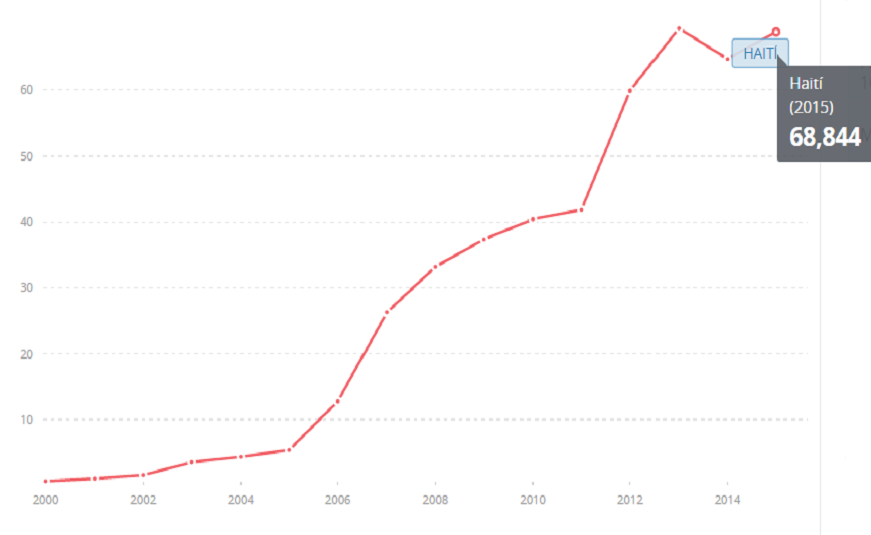
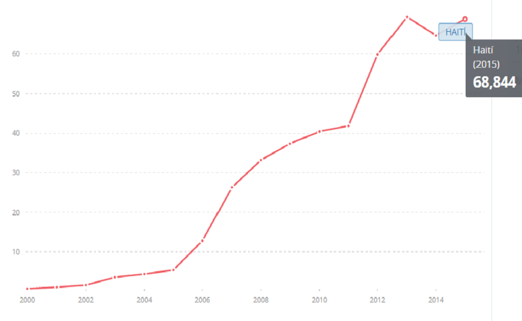

HAITÍ
ESTADÍSTICAS
SUSCRIPTORES A TELEFONÍA FIJA (POR CADA 100 HABITANTES) SUSCRIPTORES A BANDA ANCHA FIJA (POR CADA 100 PERSONAS)


PERSONAS QUE UTILIZAN INTERNET (% DE LA POBLACIÓN) SUSCRIPCIONES DE CELULARES MÓVILES (POR CADA 100 PERSONAS)
 

Fuente: Banco Mundial (2000-2015)
ENTIDADES REGULADORAS